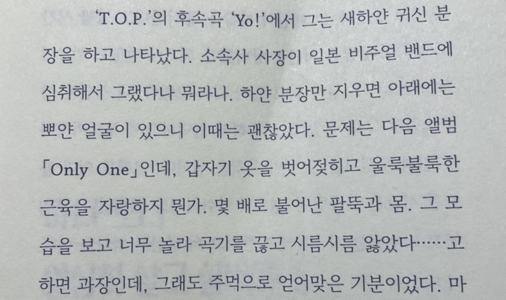

김초엽의 므레모사. 서점에서 귀여운 표지 일러스트를 보고 홀린듯이 사게 됐지만 충격적이게도 장르는 SF 호러 소설이다. 이르슐이라는 가상의 국가가 존재하는 평행우주를 배경으로 하는 므레모사는 "충격적인 결말! 예상도 못한 전개"라는 평으로 유명했지만... 글쎄요. 담아내고자 하는 메시지는 철학적이지만 정작 작품에서 너무 단순하게 표현됐다. 반대로 생각하면 내용이 직관적이라 페이지는 술술 넘어가는 편.
이소담의 그깟 덕질이 우리를 살게 할 거야. 초등학생부터 대학생인 지금까지 꾸준히 덕질을 하고 있는지라 책 제목을 보니 읽지 않을 수가 없더라. 리뷰도 안 찾아보고 일단 사긴 했는데 과연 진짜 덕후가 쓴 책일지, 아니면 '머글'이 덕후를 흉내냈을 뿐인 책인지 살짝 걱정했는데...
합격 드리겠습니다. 공감 가는 구절이 정말 많아서 페이지를 넘길 때마다 밑줄을 치고 싶었다. 대신 내 일기장을 읽는 것 같아서 13000원 주고 살만한 책은 아닌 것 같고요.(...)
무라카미 하루키의 1Q84. 작가도 작가인데다 한국에서 워낙 히트를 쳤던 작품이라 아는 사람이 많을 것 같다. 시리즈물인데다 한 권 한 권의 분량도 무시 못할 수준으로 길어서 읽을 엄두도 내지 못한 채 몇년 간 책장에 처박혀 있었다. 몇 년만에 읽게 된 결과는 대성공. 시간 가는 줄도 모르고 3일만에 전권을 다 읽어버렸다.
읽는 내내 '이게 뭐지? 그래서 뭘 말하고 싶은거지?' 의문이 들 정도로 어딘가 붕 뜬 것 같은 문체와 모호한 전개는 오히려 호기심을 자극해서 페이지를 계속 넘기게 만든다. 이게 비문학도 아니고 1부터 10까지 정확한 내용을 설명하는 것보다는 적당히 뭉개면서 넘어가는 편이 더 아름답게 느껴지긴 한다. ...남한테 추천하기에는 호불호가 많이 갈릴 것 같지만.
김하나, 황선우의 여자 둘이 살고 있습니다. 싱글 라이프를 즐기던 두 친구가 살림을 합치고 함께 살게 되면서 생긴 에피소드를 담은 에세이. 이걸 읽으면 나도 친구랑 같이 사는 삶에 대한 로망이 생기는걸까? 기대했지만... 오히려 절대로 친구랑 같이 살지 말아야지 다짐하게 해줬다. 성향이 달라도 너무 다른 두 사람이 같이 살면서 생기는 갈등 상황은 읽는 저에게도 스트레스를 줬다.
너무 나쁘게만 쓴 것 같아서 변명을 좀 해보겠다. 결혼해서 가정을 이룬 것도,
1인 가구도 아닌 또 다른 형태의 삶의 방식을 제시한 것은 분명 누군가에게 도움이 될 것이다. 그게 나는 아니었을 뿐.